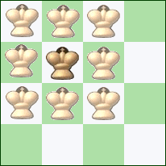
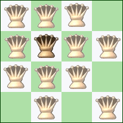
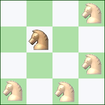
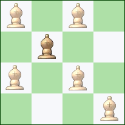
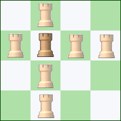
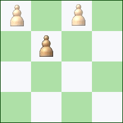

Règles de déplacement
|  |
Le Roi prend une pièce en déplaçant d'une et une seule case, horizontalement,
verticalement ou en diagonale. Dans nos défis, le Roi n'est jamais pris. |
 | Le Dame prend une pièce après s'être déplacée d'autant de cases que vous le désirez, horizontalement, verticalement ou en diagonale. |
|  |
Les CavaliersRoi prennent une pièce après avoir effectué un déplacement en forme de "L" :
deux cases dans une direction, puis une rotation à 90°, et une case dans la nouvelle direction. Les cavaliers sont les seules pièces à pouvoir sauter par dessus les autres. Ils ne prennent que la pièce ocupant la case où ils arrivent à la fin de leur mouvement. |
 |
Les Fous prennent une pièce après avoir parcouru autant de cases que vous le désirez
en diagonale. Les fous restent toujours sur les cases de la même couleur que celle où ils ont débuté. |
|  | Les Tours prennent une pièce après avoir parcouru autant de cases que vous le désirez, verticalement ou horizontalement. |  |
Les Pions prennent une pièce après s'être déplacés en diagonale d'une case.
Les Pions ne peuvent se déplacer que vers le haut. Contrairement à ce qui se passe dans une partie ordinaire, les pions ne sont pas promus lorsqu'ils atteignent la ligne du haut. |